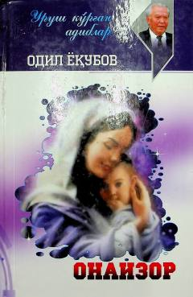

OOdil Yoqubovning urush mavzusidagi eng sara qissa va hikoyalari.
Bu kitobga O'zbekiston xalq yozuvchisi Odil Yoqubovning urush va uning iztiroblarini tasvirlovchi eng sara qissa va hikoyalari kiritilgan. Asarlar urushning dahshatlari, insoniy jasorat va vatanparvarlik mavzularini qamrab oladi. Kitob 2020-yilda G'afur G'ulom nomidagi nashriyot-matbaa ijodiy uyi tomonidan chop etilgan.